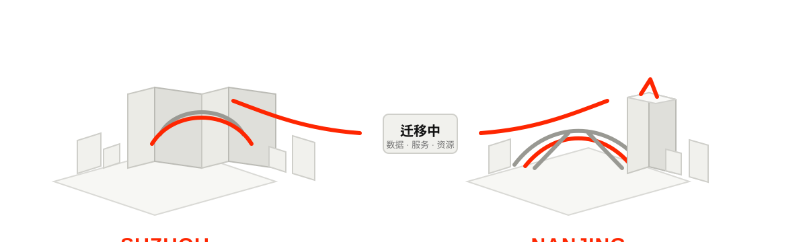

HongXingOS
系统与设备软件方向
覆盖版本维护、应用适配、设备调用、性能调度、生命周期与向下兼容。
→


覆盖版本维护、应用适配、设备调用、性能调度、生命周期与向下兼容。

围绕认证、权限、状态检测、异常响应与管理能力持续演进。

面向 Amia_晓山瑞希 的使用说明、项目文档与服务入口。

按功能拆分维护插件，延展群管理、帮助、欢迎、内容与游戏相关能力。
Amia_晓山瑞希相关服务已接入 Hong Xing（南京）网络机房，服务与数据继续分阶段迁移。
Hong Xing 下半年停止在苏州地区继续发展，后续业务、开发与资源逐步向南京集中。
O3 固件开始推送，围绕启动、连接、调度与 AuthLit 系列的响应链路进行整理与优化。
O3 固件面向受支持版本陆续推送。
开发、技术与服务资源逐步向南京集中。
Amia 相关服务正式接入南京网络机房。
计划将 O3 作为 HongXingOS 7 默认固件集成并发布。
首页使用城市地标意象说明“苏州 → 南京”的迁移方向：苏州以东方之门为识别，南京以南京眼与紫峰大厦为识别；这些仅用于城市识别，不代表真实机房建筑或最终部署地址。
迁移详情 →
文档与入口服务
帮助与指引插件
群组管理插件
欢迎与入群插件
趣味与表情插件